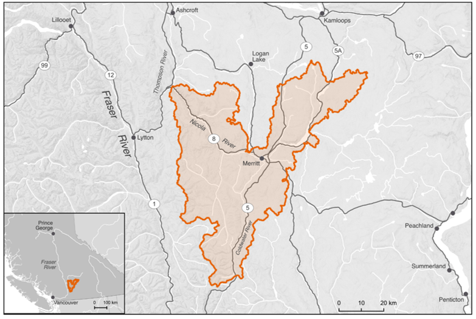
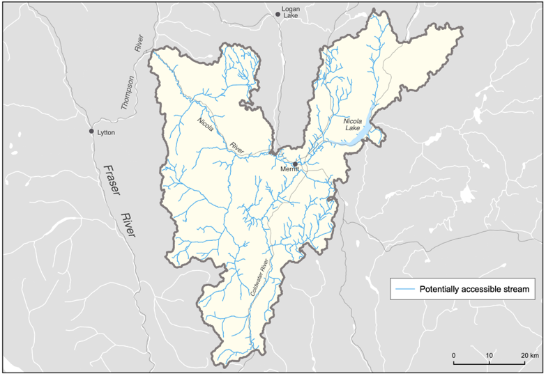

Nłeʔkepmxcín (Nlaka’pamuxcin) Name | nqilxʷcn (nsyilxcən) Name | Common Name | Scientific Name |
|---|---|---|---|
k’ʷy’íʔe/pəqéłus | ntytyix | Chinook Salmon | Oncorhynchus tshawytscha |
sx̣a̓yqs | kisúʔ | Coho Salmon | Oncorhynchus kisutch |
cóʕʷłeʔ | wəyqwəyʕaćaʔ | Steelhead | Oncorhynchus mykiss |
Purpose
The following Watershed Connectivity Restoration Plan (WCRP) represents the culmination of a one-year collaborative planning effort, including action implementation, for the Lower Nicola River watershed, the overall aim of which is to build collaborative partnerships within the watershed to reduce the threat of aquatic barriers to migratory fish and the livelihoods that they support. This 10-year plan was developed to identify priority strategies that the Lower Nicola River WCRP planning team (see Table 1) proposes to undertake between 2021-2031 to conserve and restore fish passage in the watershed, through lateral and thermal barrier rehabilitation, crossing rehabilitation, and barrier prevention strategies.
WCRPs are long-term, actionable plans that blend local stakeholder and rightsholder knowledge with innovative geographical information systems (GIS) analyses to gain a shared understanding of where restoration efforts will have the greatest benefit for migratory fish. The planning process is inspired by the Conservation Standards (v.4.0), which is a conservation planning framework that allows planning teams to systematically identify, implement, and monitor strategies to apply the most effective solutions to high priority conservation problems. There is a rich history of fish and fish habitat conservation and restoration work in the Lower Nicola River watershed that this WCRP builds upon and aims to complement over the length of the plan. This includes work undertaken by the Scw’exmx Tribal Council and the four member or affiliate nations (Coldwater, Upper Nicola, Shackan and Nooaitch bands), the Lower Nicola Indian Band, the Nicola Watershed Governance Project including the Salmon Ecosystem Table and Nicola Restoration Committee, the Nicola Basin Collaborative, and the Risk Assessment Methodology for Salmon (RAMS). The planning team will aim to work with the Nicola Watershed Governance Project and the Nicola Basin Collaborative to promote coordination, decision-making, and implementation related to this plan.
The planning team compiled existing structure location and assessment data, habitat data, and previously identified priorities in the watershed, and combined this with local and Indigenous knowledge to create a strategic watershed-scale plan to improve freshwater connectivity. The Lower Nicola River WCRP planning team applied the WCRP planning framework to define the “thematic” scope of freshwater connectivity and refine the “geographic” scope to identify the portions of the watershed where connectivity restoration efforts will take place. Additionally, the team selected focal species, assessed the current key habitat connectivity status of the watershed, defined concrete goals for gains in connectivity, sundertook an iterative structure-ranking process to identify a list of priority barriers for rehabilitation to achieve those goals (see Table 2.1). Although the current version of this plan is based on the best-available information at the time of publishing, WCRPs are intended to be “living plans” that are updated regularly as new information becomes available, or if local priorities and contexts change. As such, this document should be interpreted as a current “snapshot” in time, and future iterations of this WCRP will build upon the results presented in this plan to continuously improve the practice of aquatic barrier rehabilitation for migratory fishes in the Lower Nicola River watershed. For more information on how WCRPs are developed, see Mazany-Wright et al. (2021b).
Vision
Healthy, well-connected stream networks within the Lower Nicola River watershed support thriving populations of migratory fish. In turn, these fish provide the continued sustenance, cultural, and ceremonial needs of the Nlaka’pamux/Scw’exmx and Syilx peoples, as they have since time immemorial. Both residents and visitors to the watershed work together to mitigate the negative effects of aquatic barriers, improving the resiliency of the stream network for the benefit and appreciation of all.
Scope

The primary geographic scope of this WCRP is the Lower Nicola River watershed, located in the Thompson drainage basin of the Fraser River system in south-central British Columbia drainage area 376,064 ha; (Figure 1.1). The scope constitutes the Lower Nicola “watershed group” as defined by the British Columbia Freshwater Atlas (FWA), which excludes the Guichon Creek drainage and the Nicola River and Quilchena Creek drainages upstream of Nicola Lake. A consistent spatial framework was necessary to undertake a watershed-selection process at the provincial scale to identify target watersheds to improve freshwater connectivity for salmonids. The Lower Nicola River watershed was identified by the B.C. Fish Passage Restoration Initiative as one of four target watersheds for WCRP development (Mazany-Wright et al. (2021c)). Culturally and economically important populations of Chinook Salmon (Oncorhynchus tshawtyscha), Coho Salmon (Oncorhynchus kisutch), and the anadromoius life history of Rainbow Trout commonly referred as steelhead (Oncorhynchus mykiss) are all found in the watershed, which historically supported Indigenous sustenance and trading economies Table 1.1 (?tbl-targspec; Lower Nicola Indian Band (2015), ESSA Technologies Ltd. and Fraser Basin Council (2019), Coldwater Band (2021)).
?(caption)
Table 1.1: Focal species in the Lower Nicola River watershed. The Nłeʔkepmxcín (Nlaka’pamuxcin), nqilxʷcn (nsyilxcən), and Western common and scientific species names are provided.
The Lower Nicola River watershed comprises parts of the traditional territory of the Nlaka’pamux/Scw’exmx and Syilx Peoples, represented by the Scw’exmx Tribal Council, the four member nations (Coldwater Band, Nooaitch Band, Shackan Band, and Upper Nicola Band), and the individual nations of the Lower Nicola Indian Band and the Cook’s Ferry Band. The Nlaka’pamux/Scw’exmx and Syilx peoples steward the land and the waters of the Lower Nicola River watershed. The planning team will pursue early, meaningful, and continued engagement with First Nations communities involved in work and projects related to this plan. It will be necessary to receive permission from the communities for any work to occur on their territory.
The primary geographic scope of this WCRP was further refined by identifying “naturally accessible” waterbodies, which are defined as waterbodies that focal species should be able to access in the absence of human-made barriers (Figure 1.2). Naturally accessible waterbodies were spatially delineated using fish species observation and distribution data, as well as data on “natural barriers”, which are waterfalls greater than 5 m in height, gradient barriers based on literature-derived; species-specific swimming abilities. “Watershed exclusion areas” were also identified, which are portions of the watershed where barrier rehabilitation efforts should not occur due to additional considerations. These maps were explored by the planning team to incorporate additional local knowledge, ensure accuracy, and finalize the constraints on naturally accessible waterbodies. The planning team identified a few tributaries to the mainstem Nicola River as watershed exclusion areas due to intermittent or insufficient flows to support restoring connectivity for the focal species, including Hamilton Creek and agricultural irrigation ditches just downstream of Nicola Lake Dam. Additionally, Stumplake Creek and Peter Hope Creek were identified as watershed exclusion areas due to the presence of invasive Yellow Perch (Perca flavescens). It is unclear whether existing structures located in these systems will be effective in preventing the downstream spread of Yellow Perch, but the planning team advised maintaining the structures for the time being. All waterbodies not identified as naturally accessible were removed from the project scope. The resulting constrained geographic scope formed the foundation for all subsequent analyses and planning steps, including mapping and modelling key habitat, quantifying the current connectivity status, goal setting, and action planning (Mazany-Wright, N and Norris, S. M. and Lapointe, N. W. R. and Rebellato, B. (2021a)).

The thematic scope of this WCRP is freshwater connectivity. Connectivity influences critical components of freshwater ecosystem structure and function, including aquatic species dispersal and migration, the transport of energy and matter (e.g., nutrient cycling and sediment flows), and temperature regulation (Seliger and Zeiringer (2018)). Though each of these factors are important when considering the health of a watershed, for the purposes of this WCRP the term “freshwater connectivity” is defined as the degree to which focal species can disperse or migrate freely through freshwater systems. Connectivity can be disrupted by physical structures in the longitudinal (i.e., upstream-downstream) and lateral (i.e., connectivity between the mainstem and adjacent wetlands, floodplains, side channels, and off-channel habitat) planes, including dams, weirs, stream crossings, dykes, linear infrastructure, and debris flows. Freshwater systems can also be disconnected by “physiological” barriers that prevent the free dispersal of species, including thermal (i.e., reaches where stream temperatures are too high) or flow (i.e., reaches where stream flow is insufficient to support the requirements of any life stage) barriers.
The broader Nicola basin is a temperature- and flow-sensitive watershed, and both factors significantly affect connectivity for fish species in the Lower Nicola (ESSA Technologies Ltd. and Fraser Basin Council (2019)). The changing thermal regime of the Lower Nicola River watershed is a growing concern, with two scales of thermal impacts occurring within the watershed — watershed-scale changes in thermal regimes and localized barriers preventing access to thermal refugia.
The watershed-scale changes to the thermal regime are linked to several landscape-scale drivers including increases in water withdrawals, changes in land use, deforestation (due to resource extraction and mountain pine beetle infestations), and climate change, which are exacerbated by subsequent changes to channel-forming processes (ESSA Technologies Ltd. and Fraser Basin Council (2019)). These changes have created resulted in major wildfires and flooding occurring in 2017, 2020 and 2021, which have in turn accelerated changes to channel-forming processes, flows, and stream temperatures. Thermal barriers that prevent access to headwater reaches from the mainstem channels form annually along the valley floor. This has resulted in the adaptation of an early-migrant Chinook Salmon population, which uses the upper portions of Spius Creek and tributaries and the upper reaches of the Coldwater River, where access to the spawning grounds requires passing through the lower sections before the stream temperatures create physiological thermal barriers. These returning adults pass through the lower reaches in May and June as the freshet starts to abate, then hold in deeper pools for two months until they spawn in mid-to-late August (R. Bailey, Nooaitch Band, pers. comm.).
Localized thermal disconnectivity in the lateral dimension occurs when rearing and out-migrating juveniles are unable to access side-channel and off-channel thermal refugia and holding pools due to changing channel processes exacerbated by upland management and the development of linear infrastructure including dykes, roads, railways, and trails. These groundwater-serviced habitats provide thermal refuge for juvenile fish in the watershed; and can also provide critical refuge for returning spawners. When these lateral refugia become disconnected from mainstem channels, lethal stream temperatures can cause juvenile die-offs. Activities that restore and protect connectivity to these lateral refugia, particularly those cooled by groundwater sources, can help mitigate thermal disconnectivity in the watershed.
Mitigation of the landscape-scale drivers of changes to thermal regimes are outside of the scope of this plan. Although vital for the long-term resilience of the watershed, the broad land-use patterns, over-subscription of water withdrawals, and climate change that are causing chronic thermal issues in the watershed require more complex, coordinated, and resource-intensive solutions than this planning process can provide. This plan is intended to focus on the direct rehabilitation and prevention of localized, physical barriers to lateral thermal refugia and longitudinal connectivity to maintain fish passage to spawning, rearing, and refuge habitat. Lateral– and associated thermal– connectivity was identified by the planning team as the primary connectivity concern in the watershed within the defined scope of this plan.
Focal Species
Focal species represent the ecologically and culturally important species for which habitat connectivity is being conserved or restored in the watershed. In the Lower Nicola River watershed, the planning team selected anadromous salmonids as the focal guild, which comprises Chinook Salmon, Coho Salmon, and steelhead. The selection of these focal species was driven primarily by the focal species of the primary funds supporting this planning work. The planning team also identified other culturally and ecologically important species within the watershed to consider for inclusion in future iterations of the WCRP, including kokanee (Oncorhynchus nerka), Bull Trout (Salvelinus confluentus), Rainbow Trout (Oncorhynchus mykiss), Mountain Whitefish (Prosopium williamsoni), Lake Whitefish (Coregonus clupeaformis), Burbot (Lota lota), and Pink Salmon (Oncorhynchus gorbuscha).
Anadromous Salmonids
Anadromous salmonids are cultural and ecological keystone species that contribute to productive ecosystems by contributing marine-derived nutrients to the watershed and forming an important food source for bears and other species (Schindler and Quay. (2003)). Salmon and steelhead have enduring food, social, and ceremonial value for First Nations in the Lower Nicola River watershed – having sustained life, trading economies, and culture for the Nlaka’pamux/Scw’exmx and Syilx peoples since time immemorial (Lower Nicola Indian Band (2015), ESSA Technologies Ltd. and Fraser Basin Council (2019), Coldwater Band (2021)). The harvest and processing of these species have helped pass knowledge and ceremony to future generations (Fraser Basin Council (n.d.), Lower Nicola Indian Band (2015)).
Anadromous salmonid populations in the Lower Nicola River watershed have declined significantly since the mid-1980s, leading First Nation communities to voluntarily reduce their harvest (ESSA Technologies Ltd. and Fraser Basin Council (2019)). The Nlaka’pamux/Scw’exmx and Syilx peoples have always been stewards of the lands, resources, and fisheries in their traditional territories through an interconnected relationship based on respect and reverence, captured by the Syilx concept of Tmixw – the people only take the salmon that is needed (Lower Nicola Indian Band (2015), ESSA Technologies Ltd. and Fraser Basin Council (2019), Band (2021)). The stewardship of their waters continues through the work of the Scw’exmx Tribal Council and its four member communities, the Lower Nicola Indian Band, and initiatives like the Nicola Watershed Governance Project. The Chinook Salmon (Endangered), Coho Salmon (Threatened), and steelhead (Endangered) populations have all been assessed and proposed for Species at Risk Act listing by the Committee on the Status of Endangered Wildlife in Canada (COSEWIC). The development and implementation of this WCRP aims to support ongoing conservation and restoration work by the Nlaka’pamux/Scw’exmx, Syilx, and other local groups by providing an action plan to address the specific, tractable conservation threat posed by fragmentation, and conserving habitat connectivity for these important species.
Chinook Salmon | k’ʷy’íʔe/pəqéłus | Oncorhynchus tshawytscha
COSEWIC Designated | Status | Trend | Median percent change (last 3 generations) | Median percent change (historic) | Generation length |
|---|---|---|---|---|---|
15 - Lower Thompson (Stream, Spring) | Endangered | TBD | TBD | TBD | TBD |
Chinook Salmon are one of the first species to return to the watershed each year, arriving as early as May. The population has been in decline since the mid-1990s (LGL Ltd. (2007), Ecoscape Ltd. (2017)). Known and historic spawning locations include the mainstem Nicola River (mostly between the Coldwater River and Spius Creek confluences), Coldwater River, Spius Creek, lower portions of Clapperton Creek, and upstream of Nicola Lake in Moore Creek and the Upper Nicola River (LGL Ltd. (2007), Ecoscape Ltd. (2017)). In addition to these spawning locations, important juvenile rearing areas have been observed in Juliet Creek and Voght Creek (LGL Ltd. (2007)). Chinook Salmon stocks have been supplemented by the Spius Creek hatchery since the 1980s. Fry and smolt releases have both occurred, and the Nicola stock is currently enhanced by ~200,000 coded-wire-tagged yearling smolts released annually as a component of the Pacific Salmon Commission indicator stock study program (R. Bailey, pers. comm.).
Coho Salmon | sx̣a̓yqs | Oncorhynchus kisutch
COSEWIC Designated Unit | Status | Trend | Median percent change (last 3 generations) | Median percent change (historic) | Generation length |
|---|---|---|---|---|---|
Interior Fraser – Lower Thompson population | Threatened | N/A | 119% | -21% | 3 years |
Coho Salmon begin to return to the watershed in September, with spawning beginning in late October and continuing through December. The population has been in decline since the mid 1980s (DFO (1991), Ecoscape Ltd. (2017)). Coho Salmon stocks have been supplemented in recent decades by outplants from the Spius Creek Hatchery (Ecoscape Ltd. (2017)). The majority of Coho Salmon spawning and rearing occurs in the Coldwater River, Spius Creek, and Maka Creek, but has also been observed in Clapperton Creek, Prospect Creek, and the Upper Nicola River and Moore Creek (LGL Ltd. (2007), Pacific-Salmon-Foundation (2024)). The lower reaches of many smaller tributaries are also important Coho Salmon rearing habitat.
Steelhead | cóʕʷłeʔ | Oncorhynchus mykiss
COSEWIC Designated Unit | Status | Trend | Median percent change (last 3 generations) | Median percent change (historic) | Generation length |
|---|---|---|---|---|---|
Thompson River Population | Endangered | Declining | -79% | N/A | 5 years |
Steelhead join Chinook Salmon as the first to appear in the watershed, arriving in the spring (LGL Ltd. (2007)). The population is critically endangered and is seen as an extreme conservation concern (Fisheries and Oceans Canada (2018)). Steelhead spawning and rearing is known to occur in the lower portion of the mainstem Nicola River, Skuhun Creek, Shakan Creek, Nuaitch Creek, Maka Creek, Coldwater River, Juliet Creek, Voght Creek, Prospect Creek, and Clapperton Creek (LGL Ltd. (2007)). Historically, almost all third-order and greater streams would have supported steelhead, and groundwater-fed thermal refugia continue to provide important rearing and holding habitats (Ecoscape Ltd. (2017)).
Structure Types
Table 5 highlights structure types threatening anadromous salmonids in the watershed. The results of this assessment were used to inform the subsequent planning steps; and identify knowledge gaps where there are limited spatial data to inform the assessment for a specific structure type.
| Structure Types | Extent | Severity | Irreversibility | Overall Threat Rating: |
|---|---|---|---|---|
| Lateral Barriers (including to thermal connectivity) | High | Very High | Medium | High |
| Natural Barriers | High | Very High | Medium | High |
| Road-Stream Crossings | High | Very High | Low | Medium |
| Small Dams(<5m height) | Low | Very High | Medium | Low |
| Abandoned Rail-stream Crossings (longitudinal) | Low | Low | Medium | Low |
| Trail-stream Crossings | Low | Low | Low | Low |